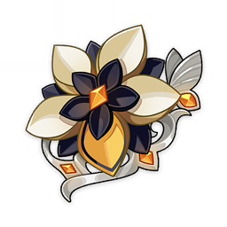
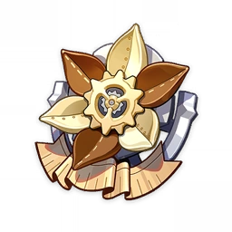

Genshin Impact · Versión 7.2
Análisis del Rol y Escalado
Navia es un personaje de elemento Geo originario de Fontaine que utiliza Mandoble y se posiciona en el tier T2 (B) Main DPS dentro del rol de Hypercarry Geo de Disparos de Escopeta Paragüas (Cristalización). Su rendimiento en combate gira en torno a este eje principal: Escalado por ATQ% & Multiplicador de Balas de Fragmentación (Shrapnel).
Para maximizar su aporte en el equipo, la configuración prioritaria combina Sentenciadora con el conjunto de artefactos Murmullo del Bosque Reverberante (4 piezas), respetando la jerarquía de estadísticas 1. Prob. Crítica / Daño Crítico (1:2) > 2. ATQ% > 3. Recarga de Energía% (120% – 135% ER) > 4. DEF% y subiendo sus habilidades en orden: Habilidad Elemental (E) >>> Definitiva (Q) = Ataques Normales.
Mejores Armas
Opciones recomendadas ordenadas por rendimiento según el meta actual y compatibilidad con sus rotaciones:
-
 Sentenciadora ★★★★★Opción por rol+Prob. Crítica, +20% ATQ y hasta +36% daño en Habilidad Elemental con Cristalización.
Sentenciadora ★★★★★Opción por rol+Prob. Crítica, +20% ATQ y hasta +36% daño en Habilidad Elemental con Cristalización. -
 Médula de la Serpiente Marina ★★★★Opción por rol+Prob. Crítica y hasta +50% daño directo en sus disparos de escopeta.
Médula de la Serpiente Marina ★★★★Opción por rol+Prob. Crítica y hasta +50% daño directo en sus disparos de escopeta. -
 Lápida del Lobo ★★★★★Opción por rolStat-sticks descomunales de ATQ% o Daño Crítico.
Lápida del Lobo ★★★★★Opción por rolStat-sticks descomunales de ATQ% o Daño Crítico. -
 Espadón Cornirrojo ★★★★★Opción por rol+88.2% Daño Crítico puro para maximizar explosiones de Fragmentos.
Espadón Cornirrojo ★★★★★Opción por rol+88.2% Daño Crítico puro para maximizar explosiones de Fragmentos. -
 Superespada Mágica Suprema ★★★★Opción por rolArma de evento con recarga y hasta +48% ATQ% pasivo.
Superespada Mágica Suprema ★★★★Opción por rolArma de evento con recarga y hasta +48% ATQ% pasivo.
Mejores Sets de Artefactos
Combinaciones de 4 piezas o mezclas de 2 piezas para maximizar su contribución:
-

Murmullo del Bosque Reverberante (4 piezas) BiS Indiscutible+18% ATQ y hasta +50% Bono Daño Geo continuo con escudos de Cristalización.
-

Cazador Fantasmal (4 piezas) BiS con Furina+36% Prob. Crítica si se juega junto a Furina.
Estadísticas Principales y Secundarias
Atributos prioritarios en artefactos para un balance óptimo de daño o soporte:
| Pieza | Estadística Principal |
|---|---|
| Reloj (Arenas) | ATQ% |
| Cáliz | Bono Daño Geo% |
| Corona | Prob. Crítica% / Daño Crítico% |
Prioridad de Subestadísticas
- 1. Prob. Crítica / Daño Crítico (1:2)
- 2. ATQ%
- 3. Recarga de Energía% (120% – 135% ER)
- 4. DEF%
Prioridad de Talentos
Habilidad Elemental (E) >>> Definitiva (Q) = Ataques Normales
Objetivos de Estadísticas (Nivel 90)
Las metas numéricas exactas de Navia varían según el arma equipada, los refinamientos y la generación de partículas de su equipo.
Prioriza cumplir primero la Recarga de Energía necesaria para mantener la rotación fluida de su Habilidad Definitiva antes de buscar subestadísticas ofensivas adicionales.
Con piezas principales de ATQ%, Bono Daño Geo% y Prob. Crítica% / Daño Crítico%, enfoca tu farmeo de artefactos en: 1. Prob. Crítica / Daño Crítico (1:2) > 2. ATQ% > 3. Recarga de Energía% (120% – 135% ER) > 4. DEF% (Escalado por ATQ% & Multiplicador de Balas de Fragmentación (Shrapnel)).
Talentos de Combate y Materiales (Nivel 1 al 10)
Habilidades principales de Navia y desglose exacto de libros, materiales y Mora para mejorar sus talentos:


Composiciones de Equipo Recomendadas
Alineaciones con mayor sinergia elemental y amplificación de daño en el Abismo y Teatro Fantasía:
Materiales de Ascensión (Nivel 1 al 90)
Recursos totales requeridos para desbloquear las 6 fases de ascensión de Navia. Coste total de Mora en ascensiones: 420.000 Mora.


Sinergias y Guías Relacionadas
Explora las fichas de armas, artefactos y materiales de los principales compañeros de equipo para Navia: